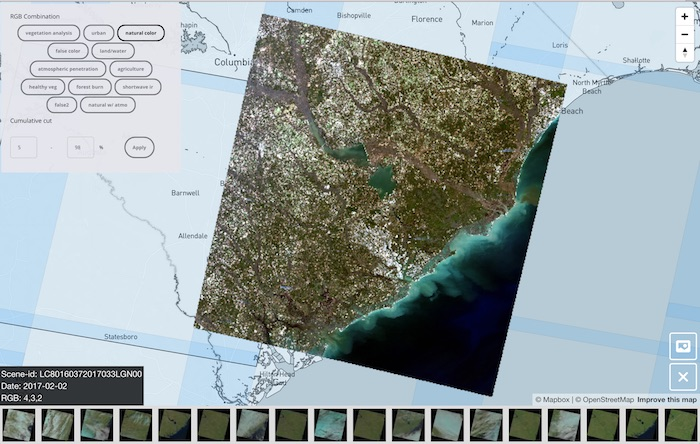

I cannot tell how proud and exited I am about this blog post.
It has been almost a year without a post in RemotePixel blog. Even if RemotePixel twitter account is still active, I didn't have much time to spend on the web site since I started working at Mapbox. As some people might know, RemotePixel site was a side project where I was trying to close the gap between web mapping technologies and remote sensing data. After two years working almost every night on the site, I was offered a job at Mapbox I couldn't refuse.
This is a dream job and it means that I now work on subject that I love (image processing on the cloud, Web devellopment, ...) but it also means that I don't need to work on RemotePixel to work on stuff I like (I know I'm being selfish).
Mapbox + RemotePixel
But, it's not because I'm not actively working on RemotePixel that I forget that a lot need to happend to make Earth Observation easily available to anyone.
Today, I wrote my first post on Mapbox blog and I hope you'll like it.
Dear friends stop downloading Landsat images… create your own Landsat tile server using AWS Lambda https://t.co/AUu4X9rKh5
— Vincent Sarago (@_VincentS_) October 12, 2017
TLDR; (To Long Don't Read): We just released all the blocks that enable anyone to create its own high resolution landsat tile server and viewer.
This is not a joke, if you have an AWS account and docker installed on your computer you can create and deploy your own Landsat tile server in 5 minutes using only 6 lines of code.
I have been dreaming of such a project for more than a year, and I still can believe that today anyone can create its own.
RemotePixel landsat viewer
As you can imagine, I've built my own and it's live on viewer.remotepixel.ca
Links
- Date: October 2017
- Category: News / Landsat / AWS Lambda